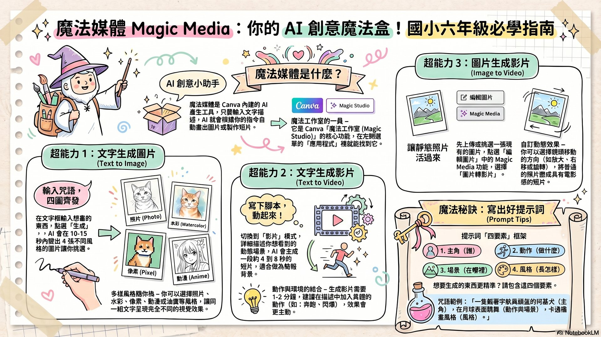
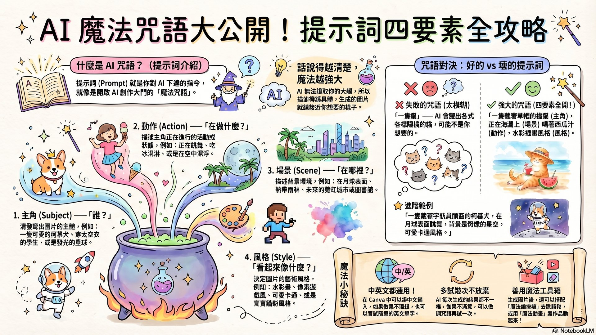
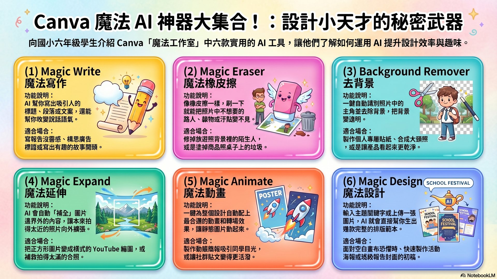
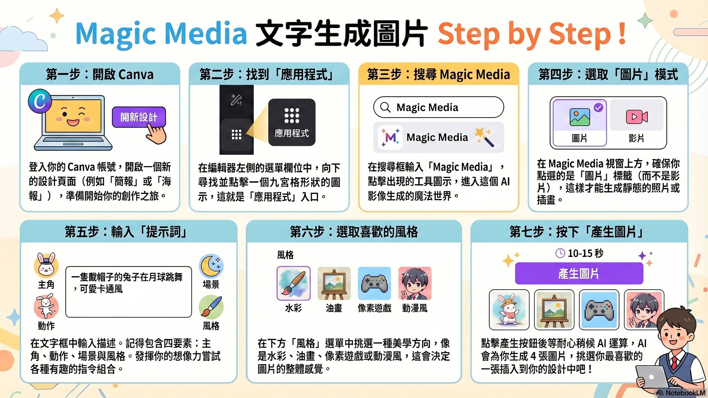

今天的學習目標 ★
🎨 認識 Magic Media 魔法媒體
✍️ 學會提示詞四要素
🎬 用文字生成圖片 & 影片
✂️ 使用去背景與魔法橡皮擦
🚀 認識其他 Canva AI 功能
STAGE 1 · 魔法媒體
STAGE 2 · 文字生成圖片
STAGE 3 · 提示詞技巧
STAGE 4 · 文字生成影片
STAGE 5 · 其他 AI 工具
STAGE 1
魔法媒體 Magic Media 是什麼？
認識 Canva 最強 AI 工具
什麼是魔法工作室（Magic Studio）？
- →Canva 把所有 AI 工具統稱「魔法工作室（Magic Studio）」
- →裡面有許多神奇的 AI 功能，讓設計變得超簡單！
- →魔法媒體（Magic Media）是其中最受歡迎的工具
- →只要輸入文字描述（提示詞），AI 就自動生成圖片或影片
- →免費版每月約 50 次；可申請 Canva for Education 教育版帳號
★ 阿凱老師說：想像你有一個超厲害的小畫家朋友，你說「畫一隻在月球跳舞的柯基犬」，他馬上就畫給你看！這就是 Magic Media！
Magic Media 有哪三大功能？點選看看！
🖼️
文字生成圖片
Text to Image
Text to Image
🎬
文字生成影片
Text to Video
Text to Video
✨
圖片生成影片
Image to Video
Image to Video
點選上方卡片查看說明
選擇一個功能來了解更多！
快來測試一下！
1. Canva 的 AI 工具總稱叫什麼？
2. 使用 Magic Media 時，我需要輸入什麼讓 AI 生成圖片？
📋 教師提示
建議先讓學生猜猜「提示詞」是什麼意思，再引入 Magic Media 概念。可以展示好的 vs. 壞的提示詞對比，讓學生體驗差異。課程時間建議：15-20 分鐘。
STAGE 2
文字生成圖片 — Text to Image
7 個步驟，輸入咒語就能召喚圖片！
操作步驟（7步驟）
- 1開啟 Canva，點選「新增設計」
- 2點選左側「應用程式」→ 搜尋欄輸入「Magic Media」
- 3確認選擇「圖片」模式（不是影片）
- 4在文字框輸入你的「提示詞」（中文或英文都可以）
- 5往下選一個你喜歡的「圖片風格」（水彩/動漫/像素/素描…）
- 6點選「生成」，倒數 10～15 秒
- 7從 4 張圖中選最滿意的，點一下就加到畫布！
★ 阿凱老師說：不喜歡？沒關係！可以一直按「生成」，每次結果都不一樣，是隨機的驚喜！
步驟模擬器 — 點每個步驟來練習！
點選步驟按鈕開始！
從步驟 1 開始，照順序點每個步驟，學會整個流程。
快來測試一下！
3. 在 Canva 找到 Magic Media 應該去哪裡？
4. 生成圖片後，AI 會一次給你幾張圖片讓你選擇？
📋 教師提示
讓每個學生實際操作一次完整的 7 步驟流程，生成一張圖片。觀察學生在哪個步驟遇到問題（通常是步驟 2 找不到 Magic Media，或步驟 4 提示詞太短）。
STAGE 3
提示詞四要素 — 咒語怎麼寫？
學會這四招，AI 就能畫出你心裡的圖！
咒語四要素框架
- 1主角（是誰/什麼）：畫面中的重點是誰？
例：一隻小恐龍 / 穿太空衣的小學生 / 一顆會發光的星球 - 2動作（在做什麼）：主角正在幹嘛？
例：在跑步 / 漂浮在空中 / 吃冰淇淋 - 3場景（在哪裡）：背景是什麼？
例：熱帶雨林 / 月球表面 / 日本街道 - 4風格（什麼感覺）：像什麼畫風？
例：水彩插畫 / 卡通 / 像素遊戲 / 寫實攝影
提示詞組合器 — 選選看，AI 咒語出來了！
組合出來的 AI 咒語（提示詞）：
選擇上方四個選項，咒語就會出現在這裡！
好提示詞 vs. 壞提示詞 — 點選看差別！
✗ 壞的咒語（太短！）
「兔子」
✓ 好的咒語（四要素！）
「一隻戴帽子的小兔子，在彩虹旁邊玩耍，卡通風格」
快來測試一下！
5. 下面哪個是最好的提示詞？
6. 提示詞的「風格」要素是指什麼？
📋 教師提示
讓學生分組進行「咒語大賽」：各組用提示詞組合器設計咒語，生成圖片後投票選最有創意的！重點引導：加越多細節，效果越好。
STAGE 4
文字生成影片 — Text to Video
讓你的文字變成會動的短片！
操作步驟
- 1在 Magic Media 中，點選「影片」模式（切換到影片）
- 2輸入詳細的場景描述（要更具體！描述動作和環境）
- 3選擇影片比例：16:9（電視橫式）或 9:16（手機直式）
- 4點選「生成影片」，耐心等候 1～2 分鐘
- 5生成完成！影片通常是 4～8 秒的短片
- 6點擊影片加到畫布，或下載使用
★ 阿凱老師說：影片比圖片需要更多時間，要有耐心！提示詞要把「動作」描述得很清楚，例如：「海浪緩緩拍打沙灘」比「海邊」好多了！
圖片 vs. 影片模式有什麼不同？
🖼️ 文字生成圖片
- ⏱ 等待：約 10-15 秒
- 📦 結果：靜態 PNG 圖片
- 🎨 一次給你：4 張選 1
- ✏️ 提示詞：任何描述都行
- 📶 適合：插圖、背景、素材
🎬 文字生成影片
- ⏱ 等待：約 1-2 分鐘
- 📦 結果：動態 MP4 影片
- 🎞 長度：4-8 秒短片
- ✏️ 提示詞：動作要寫清楚！
- 📶 適合：簡報動畫、創意短片
快來測試一下！
7. 文字生成影片通常要等多久？
8. 手機上看比較好看的影片，應選哪個比例？
📋 教師提示
因為影片生成需要較長時間，建議先讓學生設計好提示詞再按生成，等待時可以進行其他學習活動。免費版有次數限制，建議全班共用示範帳號示範。
STAGE 5
其他 Canva AI 神器大集合！
點選工具卡片，了解每個功能的用法
✍️
Magic Write
魔法寫作
魔法寫作
✂️
去背景
Background Remover
Background Remover
🧹
Magic Eraser
魔法橡皮擦
魔法橡皮擦
↔️
Magic Expand
魔法延伸
魔法延伸
💫
Magic Animate
魔法動畫
魔法動畫
🎨
Magic Design
魔法設計
魔法設計
點選工具卡片來了解！
選擇上方的 AI 工具卡片。
去背景 vs. 魔法橡皮擦 — 傻傻分不清楚？點選看懂！
✂️ 去背景（Background Remover）
把你想要的主角留下來，背景消失
🧹 魔法橡皮擦（Magic Eraser）
把不想要的雜物消除，背景保留
點選卡片查看詳細說明 ↑
快來測試一下！
9. 想把照片裡不小心入鏡的路人擦掉，應用哪個工具？
10. 要讓靜態設計自動加上動畫效果，應用哪個工具？
📋 教師提示
可以帶學生實際體驗「去背景」功能（用自己的大頭貼照），這通常是最令學生驚喜的功能！也可以讓學生挑戰「找出哪個工具最適合」的情境題目。
🗺 NotebookLM 生成的學習資訊圖表

Magic Media 三大功能簡介

AI 提示詞四要素大公開

Canva 其他 AI 神器集合

Magic Media 操作步驟圖解
🤖 如何生成此頁面？
本駕駛艙由 NotebookLM（AI 筆記）+ Claude Code 自動生成。
流程：深度網路搜尋 → 來源整理 → AI 生成簡報/圖表 → HTML 駕駛艙
📚 延伸學習
Canva 官方說明文件（中文）、Magic Media 操作教學影片。
（可在 NotebookLM 筆記本中找到所有來源連結）
❓ 學生常見問題解答（由 NotebookLM AI 整理）
Q1. 為什麼 AI 畫出來的圖跟我想的不一樣？
因為你給 AI 的「提示詞」太短囉！AI 就像需要清楚指令的小畫家，如果只說「兔子」，它只能亂猜。要讓 AI 聽懂，用「咒語四要素」：主角 + 動作 + 場景 + 風格。例如：「一隻戴帽子的小兔子在彩虹旁邊玩耍，卡通風格」，AI 就能畫出超讚的圖片！
Q2. 去背景和魔法橡皮擦有什麼不同？
去背景（Background Remover）：把你想要的主角留下來。就像剪貼紙，把背景變透明，只留下你或物品。適合做個人大頭貼或貼紙效果。
魔法橡皮擦（Magic Eraser）：把你不喜歡的雜物消掉。就像用橡皮擦把照片裡不小心拍到的路人塗掉，但保留原本的背景。
魔法橡皮擦（Magic Eraser）：把你不喜歡的雜物消掉。就像用橡皮擦把照片裡不小心拍到的路人塗掉，但保留原本的背景。
Q3. 提示詞要用中文還是英文輸入？
兩種都可以！你可以放心地輸入中文，AI 也看得懂。偷偷告訴你一個小秘訣：有時候 AI 對英文的理解力會更精準一點，所以可以先用中文試試看，如果不滿意，再試著加一點英文單字進去調整。
Q4. 免費版次數用完了怎麼辦？
如果使用的是一般免費版帳號，魔法媒體（文字生成圖片）每個月大概只有 50 次的免費額度。不過別擔心！你可以請老師幫忙或自己用學校信箱申請免費的「Canva 教育版（Canva for Education）」帳號。升級後就可以解鎖更多次數，無限使用許多魔法工具！
Q5. AI 生成的圖片可以用在作業裡嗎？
可以用於個人和教育目的！Canva 的使用條款規定，用 Canva 工具生成的內容可以用於個人和教育用途，但不能宣稱是完全原創的藝術作品。作業使用通常沒問題，但記得說明是 AI 生成的圖片。